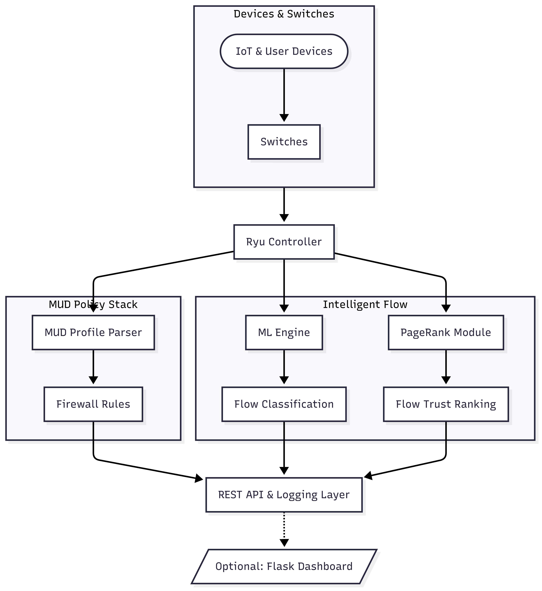

System Architecture
Architecture Overview
IntelliHome SDN is built as a modular and programmable network control framework using SDN principles. The core system is powered by the Ryu controller and interacts dynamically with IoT devices in a smart-home environment through OpenFlow-enabled switches.
System Diagram
The following diagram illustrates the core components and data flow within IntelliHome SDN:
Component Breakdown
1. Ryu Controller
Acts as the SDN brain. Receives packet-in events from switches, processes flow rules, and issues instructions dynamically. Integrates with MUD, ML, and trust modules to inform decisions.
2. MUD Policy Parser
Extracts access control information from device-specific Manufacturer Usage Description (MUD) JSON files. Validates flow behavior against expected communication patterns and enforces rule violations.
3. Machine Learning Classifier
A RandomForestClassifier trained on flow-level features like source/destination IP, ports, protocol, and byte count. Classifies flows in real time as benign or malicious and flags them for action.
4. PageRank Trust Engine
Builds a graph of active flows, where each node represents a host or device, and edges represent communication. Uses networkx.pagerank() to assign trust scores to flows based on volume, consistency, and reputation.
5. REST API and Dashboard (Optional)
Exposes flow statistics and alerts via a RESTful interface. Can be visualized using a Flask dashboard or consumed by external monitoring tools.